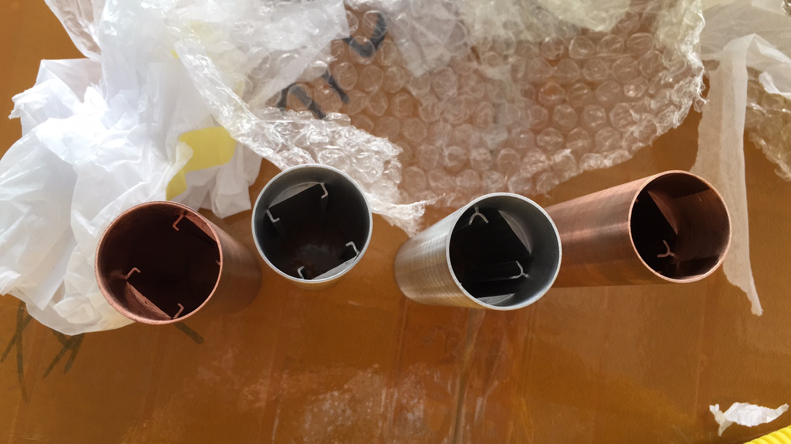

From reverse engineering to a validated prototype — thermal barrel design, material testing, and a bespoke lifecycle test rig.

A multidisciplinary product development project for MD London, focused on improving the thermal barrel of a consumer hair curling iron. The work covered heater technology evaluation, barrel geometry and material iteration, thermal simulation, and lifecycle validation.
I designed barrel geometries across multiple materials, evaluated three heater technologies, ran SolidWorks thermal simulations, and selected EDM as a cost-effective prototyping route. I also designed the electrical contacts and built a custom Scotch-yoke test rig to measure contact resistance across a ~1,000-cycle durability run.
The challenge
Before
Existing consumer curling irons on the market had poor thermal efficiency, inadequate contact durability, and materials selected for cost rather than performance. The briefing required a product that improved on all three — but with no budget for the casting or extrusion tooling that production-grade barrel prototyping normally demands.
Standard prototyping routes would have cost tens of thousands in tooling before a single functional part could be tested. The project needed a way to produce geometrically accurate barrel prototypes at small-batch cost.
What was needed
Key insight: Wire EDM can replicate the cross-sectional profiles of extrusion and casting without dedicated tooling — producing prototype barrels that are geometrically equivalent to production parts at a fraction of the cost. This unlocked accurate functional testing before any tooling investment was made.
The project began with a systematic reverse engineering exercise: disassembling several competing curling irons to map their internal architecture, heater configurations, and material choices.
Three heater technologies were evaluated — PTC (Positive Temperature Coefficient), silicone heaters, and Metal Ceramic Heaters (MCH) — with each assessed against thermal efficiency, ramp-up speed, manufacturing compatibility, and long-term durability.
This analysis directly informed the material and geometry decisions that followed, providing a baseline against which every prototype iteration could be measured.
SolidWorks thermal simulations were conducted to compare heat distribution patterns across MCH (Metal Ceramic Heater) element configurations under steady-state conditions — identifying the optimal balance of thermal performance, manufacturing simplicity, cost, and ergonomics.
Thermal scale reading guide
Dual heating element — two distinct thermal zones


Temperature range
Heat distribution pattern: Two distinct hot spots with visible temperature bands along the barrel length — within acceptable specification for the end-use application.
Triple element — thermal lobes beginning to merge


Temperature range
Heat distribution pattern: Hot spots begin merging into broader zones — reduced banding, but added component count and assembly steps.
Quad element array — near-uniform conical heat distribution


Temperature range
Heat distribution pattern: Complete lobe merger creates smooth conical heat profile — most uniform surface distribution. Diminishing returns versus added cost and weight.
Design decision
Why 2F despite less uniform distribution?
Performance validation
Simulation parameters: Software: SolidWorks Thermal Simulation · Analysis type: Steady-state heat distribution · MCH element: 30 W · Ambient: 23 °C ±2 °C · Surface measurements at barrel outer diameter
Barrel geometry

Barrel geometry iterations in Al 1150, Al 6061, and Cu 10100
Internal configuration comparison
Cross-sectional geometry determines how the MCH element seats against the barrel bore and where contact pressure concentrates — directly governing which thermal distribution pattern appears in the FLIR images. The finger count sets the angular spacing between mounting points: 180° for 2F, 120° for 3F, and 90° for 4F. Copper barrels were prototyped alongside aluminium to baseline conductivity differences before committing to Al 6061 as the production material.
2F — Copper
Dual mounting points, 180° opposed
2F — Aluminium
Same geometry, reduced mass
3F — Copper
Triple mounting, 120° spacing
4F — Configuration
Quad mounting, 90° spacing
MCH heaters were selected over PTC and silicone alternatives. PTC elements self-regulate temperature but lack the thermal density and ramp-up speed required for the product’s target performance. Silicone heaters offered flexibility but introduced compliance issues when pressed against a rigid barrel. MCH elements provided the highest thermal efficiency, direct surface contact, and compatibility with the barrel’s geometry under compression.
Cu C11000 and Al 6061-T6 were prototyped and compared directly. Copper’s thermal conductivity (391 W/m·K) is more than twice that of aluminium (167 W/m·K), but its density of 8.96 g/cm³ versus aluminium’s 2.70 g/cm³ added weight that exceeded the product’s ergonomic target for a portable appliance. Al 6061 offered a workable balance of conductivity, machinability, and mass; SolidWorks thermal simulations confirmed it could sustain operating temperatures without deformation across the design’s thermal cycle.
The barrel geometry required internal features that would normally be produced by extrusion — a process where tooling costs make small-batch prototyping prohibitively expensive. Electrical Discharge Machining (EDM) was identified as a compatible alternative: it replicates the cross-sectional profiles achievable in extrusion without dedicated dies, producing prototype parts dimensionally equivalent to the intended production geometry. This allowed functional testing to proceed using parts that matched the mass-production specification.
End caps required a polymer capable of sustained exposure to temperatures exceeding 200°C in contact with the barrel. PEEK was selected for its thermal stability and mechanical strength at elevated temperatures. For the contact holder, PEI (ULTEM) was used in its place — it shares PEEK’s high-temperature resistance and is directly 3D-printable, making it a cost-efficient alternative for components where load-bearing requirements did not justify the premium of machined PEEK.
Barrel material comparison
Copper’s conductivity advantage could not justify the weight penalty for a portable handheld appliance. The 70% mass reduction of Al 6061 was decisive — and SolidWorks thermal simulation confirmed its conductivity was sufficient to meet the barrel’s surface temperature specification under steady-state operating conditions.
Iteration moved from material coupons and simple geometry tests through to full functional assemblies, with each stage resolving a specific uncertainty before committing to the next.

EDM barrel with spring contacts assembled for thermal cycling tests
The ST microcontroller arrived pre-programmed by the electrical engineer. Validation required connecting the board to barrel-mounted thermocouples and confirming the closed-loop control delivered the specified heating curve in hardware — bridging the electrical and thermal domains.

Closed-loop thermal response — barrel temperature vs. time at target setpoint. Confirms control stability and ramp rate within spec.
Time to steady state
~230 s
Setpoint
180°C — no overshoot
A separate rig was built to isolate connector degradation — critical to long-term reliability.
System Architecture Diagram


Scotch-yoke test rig — full assembly
Actuation
Scotch-yoke mechanism converts motor rotation to consistent linear stroke — no encoder or position feedback required.
Control & Logging
Raspberry Pi triggers each cycle, records resistance across the connector, and writes timestamped values to CSV and serial monitor.
Test Protocol
Resistance variation stayed within ±0.2% across all 1,024 cycles — no connector degradation detected.
 ▶
▶
Rig in motion — simulated lifecycle sequence
Following successful validation, the design moved into small batch assembly — bridging the gap between a proven prototype and a repeatable, manufacturable product.
Component sourcing was coordinated across multiple suppliers, with lead times and minimum order quantities dictating build scheduling. Each unit was assembled in a fixed sequence to ensure heater seating, contact alignment, and end-cap torque were applied consistently. A simple go/no-go resistance check was used at the end of assembly to catch connector faults before units left the bench.
This stage surfaced several small design adjustments — primarily to contact spring preload and barrel fit tolerance — that would not have been visible in single-unit prototype assembly but became apparent when building in sequence.

Assembly line — batch production
🔹 Scalable Prototyping is Key
I learned that low-volume prototyping often fails when it doesn’t align with mass production realities. My solution was to use EDM not just as a “quick fix,” but as a strategic bridge. By cutting profiles that mimic extrusion, I created a part that functioned immediately for testing and validated the geometry for future extrusion tooling. This ensures that the design isn’t just a prototype—it’s a scalable product roadmap.
🔹 Trade-offs
Copper conducts heat significantly better than aluminum, but it is also nearly 3x heavier. This project taught me that the “right” material isn’t the one with the best spec sheet; it’s the one that balances thermal performance with user experience. I learned to prioritize system-level optimization over individual component perfection.
🔹 Test Rig
Addressed an equivalent gap on the durability side. Contact resistance measurements taken by hand at arbitrary intervals would not have resolved the degradation profile with enough fidelity to confirm or reject the connector design with confidence.
See the full range of mechanical and product design work in the portfolio.